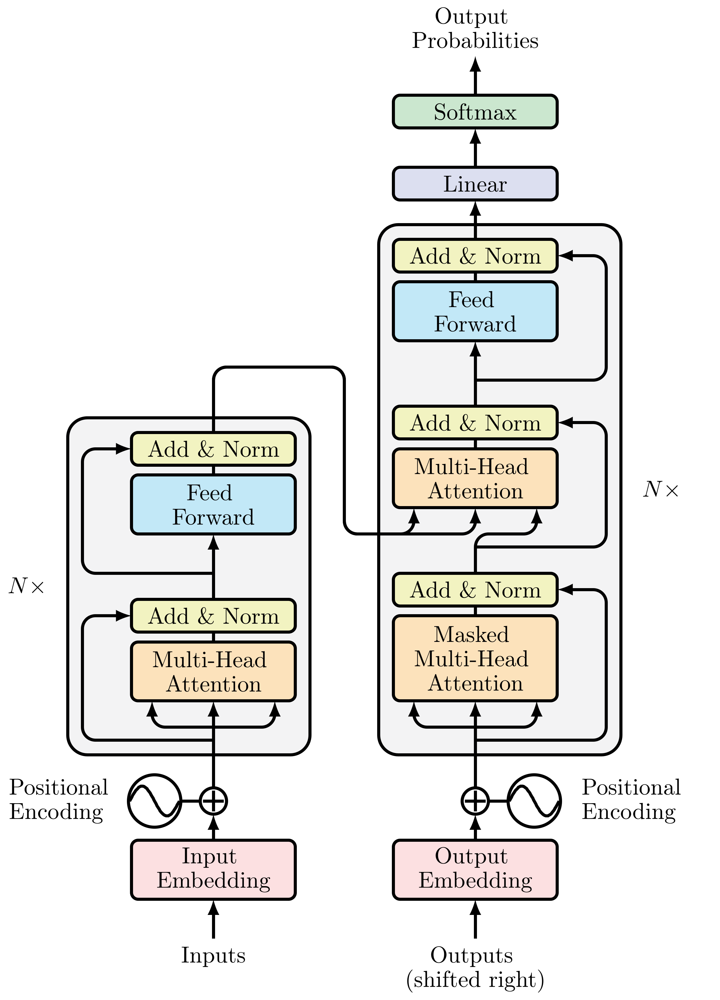

Transformerアーキテクチャ
Contents
Transformerアーキテクチャ#
OpenAIのGPTなど、現在主流となっている言語モデルには、基本的にTransformerというアーキテクチャが使われています。
Transformerは、自然言語処理の分野で大きな進歩をもたらした重要な技術です。このアーキテクチャは、特に大量のテキストデータからパターンを学習し、文脈に基づいた情報を処理するのに非常に効果的です。
(オリジナルの)Transformerはエンコーダ・デコーダーアーキテクチャをベースにしています。
エンコーダ：入力されたトークン列を、埋め込みベクトル(隠れ状態)に変換します。
デコーダ：エンコーダの隠れ状態を利用して、トークンの出力系列を生成します。

Transformerの構成要素#
Multi-Head Attention#
Attentionは、各トークンに対して固定的な埋め込みを使う代わりに、系列全体を使って各埋め込みの加重平均を計算しています。
つまり、トークン埋め込みの系列\(x_1,...,x_n\)が与えるとき、Self-Attentionは新しい埋め込みの系列\(x'_1,...x'_n\)を生成します。ここで、\(x'_i\)はすべでの\(x_j\)の線形結合になります。
係数\(w_{ji}\)はAteention weightと呼ばれます。各要素をクエリ（Query）、キー（Key）、バリュー（Value）として表現し、これらを用いて他の要素との関連を計算することでAteention weightを求めます。
Attention機構の表現力をさらに高めるために、Attention機構を同時に複数適用するのはMulti-Head Attentionになります。
位置埋め込み(Positional Encoding)#
同じ単語でも、文中の位置によって意味が変わることがあります。位置埋め込み(Positional Encoding)は名前通り、入力トークンの順序や位置情報をモデルに提供する役割を果たします。位置埋め込みにより、モデルは各単語の文中での相対的な位置を理解し、より正確な文脈解析が可能になります。
RNNようなモデルは、、入力データを順序付けて処理しますので、入力トークンの順序情報が自然に考慮されます。しかし、Transformerは入力を並列に処理し、基本的には単語の順序情報を無視します。そのため、文の意味を正確に理解するためには、単語の位置情報が別途必要となります。
位置埋め込みを実現する方法はいくつかあります。
絶対位置表現:事前に定義された関数を用いて、各位置に対してユニークな埋め込みを生成します。オリジナルのTransformerモデルは、変調されたサインとコサイン信号から静的なパターンを使用します。
相対位置表現:Transformerベースの後続モデル（例えば、BERTやGPTなど）では、位置埋め込みがモデルのトレーニングプロセスの一部として学習され、より文脈に適応した表現を提供します。
このように、埋め込み層は各トークンに対して1つの位置埋め込みを作成します。

位置埋め込みを可視化してみると、トークンの位置ごとに異なる位置符号のベクトルが割り当てられていることがわかります。しかも、隣接する符号の類似度が高いことも確認できます。
こうした位置符号の特徴は、近いトークン同士の方が遠いトークン同士よりも意味的・文法的関連度が高くなりやすい言語の特性を学習するにも役にたつと考えられます。

Add&Norm#
Add&Normは、Self-AttentionやFeed-Forwardネットワーク出力に対して適用されます。具体的には、「残差結合（Residual Connection）」と「レイヤー正規化（Layer Normalization）」の組み合わせから成り立っています。
残差結合: ある層の出力にその層の入力を加算し、最終的な出力にします。
レイヤー正規化: 過剰に大きい値によって学習が不安定になることを防ぐために、残差接続の結果を正規化します。

Feed-forward層#
線形層と中間の非線形活性化関数で構成されています。ただ、注意してほしいのは、ここでは一連の埋め込み全体を一つのベクトルとして処理するのではなく、各埋め込みを独立に処理するように工夫しています。
このため、この層はposition-wise feed forward netwrokと呼ばれることもあります。
Feed-forward層は、文脈に関連する情報をその大規模なパラメータの中に記憶しており、入力された文脈に対して関連する情報を付加する役割を果たしてると考えられています。
エンコーダ・デコーダ#
エンコーダ#
入力テキストをトークン化し、トークン埋め込むに変換します。特に、トークンの位置に関する情報を含む位置埋め込みも生成します。
複数のエンコード層を積み重ねることでエンコーダを構成します。各エンコード層の出力埋め込みと入力とは同じサイズはずです。エンコード層の主な役割は、入力埋め込みを「更新」して、系列中の何らかの文脈情報をエンコード表現を生成することになります。
Multi-Head Attention
各入力埋め込みに適用される全結合の順伝播層
デコーダ#
エンコーダの出力はデコーダに送られ、デコーダは系列中に最も可能性の高いトークンとして次のトークンを予測します。
一般的には、デコーダは、<BOS>のようなテキストの先頭であることを表すトークンを入力として受け取り、文章の生成を開始し、最大長に達するまでか、系列の終了を表す<EOS>のような特別トークンに到達するまで続けられます(shifted right)。
エンコーダも複数のエンコード層より構成されています。
Masked Multi-Head Attention#
デコーダ側にMulti-Head Attentionには、マスク処理(masking)が行われます。
エンコーダ・デコーダでは、エンコーダに入力されるトークン列\(u_1,u_2,...,u_M\)から\(w_1,w_2,...w_i\)を順に予測されるように学習します。ここで、\(w_i\)までを予測した状態のとき、学習は\(u_1,u_2,...,u_M\)と\(w_1,w_2,...w_i\)からトークン\(w_{i+1}\)を予測できるようにモデルを更新していくことで行われます。
しかし、Self-attentionはトークン全体から情報を取得するため、モデルは\(w_{i+1}\)を予測際は\(w_{i+1},...w_N\)の情報も利用できることになります。
マスク処理は、注意機構において位置\(i\)のトークンについて処理する際\(i+1\)以降のトークンのAttnetionスコアを\(-\infty\)に設定することで、各時点で生成するトークンが、過去の出力と現在予測されているトークンだけに基づいていることを保証します。
交差注意機構(Cross Attention)#
デコーダには、交差注意機構が使われています。具体的には、注意機構において、queryはデコーダの埋め込み列、keyとvalueにはエンコーダの出力埋め込み列が使われます。
このようにして、デコーダが次のトークンを生成する際に、入力シーケンス全体を考慮できるようにします。
まとめ#
Transformerは、主にエンコーダ、デコーダ、エンコーダ・デコーダーというアーキテクチャに大別されます。Transformerの成功は、Transformerベースの後続モデルの開発を引き起こしました。BERT、GPT、T5（Text-to-Text Transfer Transformer）などは代表的なバリエーションにであり、NLPの分野において画期的な進歩をもたらしました。